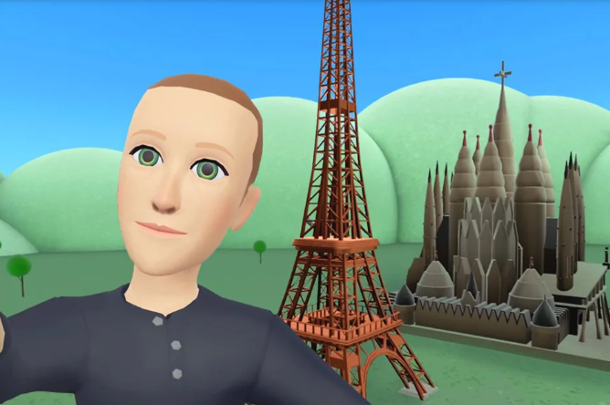

不到一年前，马克·扎克伯格宣布，他作为哈佛本科生创立的公司将更名为Meta。“从现在开始，我们将成为元节优先，而不是 Facebook 优先，”他在公司 Connect 活动的虚拟主题演讲中说。
自从大肆宣传虚拟世界以来，扎克伯格已经花了一年时间。他展示了反乌托邦式的VR 办公室，与 Neil deGrasse Tyson 一起观看了VR中的空间图片，并说服了 不止一名职业运动员与他一起玩 VR 游戏。他在 Joe Rogan 的播客中赞美混合武术和虚拟现实的优点。Rogan 甚至获得了 Meta 新高端 VR 耳机的早期演示，预计将在 Connect 期间推出。
但是元宇宙也被证明是一个巨大的金钱坑。仅在去年，该公司就在其元宇宙野心上损失了数十亿美元，而且这种趋势不太可能很快逆转。该公司去年宣布计划在欧洲雇佣 10,000 名工人，专门用于建立其虚拟世界，现在正在裁员和重组团队。
因此，在今年太平洋时间上午 10 点以扎克伯格的主题演讲拉开帷幕的今年 Connect 上，赌注感觉更高。对于成为“元界公司”的真正含义，我们仍有很多疑问。
扎克伯格能否（再次）解释虚拟世界是什么？
这可能是最明显的问题，但自从扎克伯格第一次试图阐明什么是元宇宙以来的近一年里，它仍然不是很清楚。去年，扎克伯格将其描述为“一个身临其境的互联网，而不仅仅是看着它。” 该公司的网站目前表示，元宇宙是“社交连接的下一次演变和移动互联网的继任者”。
但这些词对大多数人的意义充其量是模糊的。Creative Strategies 的消费者分析师Carolina Milanesi 说：“除了早期采用者和精通技术的人之外，对于什么是元宇宙以及我们将如何处理它，仍然存在困惑。”
这意味着扎克伯格不仅需要提供一个可以理解的定义，还需要了解这对他平台上的数十亿人意味着什么。这让我们……
它看起来很酷吗？

扎克伯格的地平线化身被广泛嘲笑。
这似乎不是扎克伯格关于移动互联网取代虚拟世界的愿景所面临的最重要问题，但它可能对建立他如此渴望的炒作大有帮助。因为，现在，Meta 的虚拟世界看起来……有点蹩脚。
这一点从未像扎克伯格时那样明显很认真分享了他在 VR 埃菲尔铁塔和圣家堂前从 Horizon Worlds 拍摄的头像，可以大方地描述为扁平和业余。他很快跟进了一个新头像，并承诺将在 Connect 上为 Horizon Worlds 提供更好的图形。
但 Meta 需要展示的不仅仅是看起来像是在这个千年创造的图形。理想情况下，它会展示一种看起来很酷的元宇宙体验。或者至少可以吸引那些已经在 Roblox 或Fortnite或其他元节相邻空间中度过时间的人。
Milanesi 补充说，这将有助于展示虚拟世界的体验，而不仅仅是在 VR 中开会或与陌生人闲逛。“我认为在教育方面或娱乐方面还有其他用例，这可能会更有趣，”她说。
然而，早期迹象表明，我们不应该期待 Horizon Worlds 的大幅改进。根据*The Verge 最近的一份报告，*该应用程序是这么马车该公司正在努力让自己的员工始终如一地使用它。
它将如何让创作者和第三方参与进来？
但这带来了另一个问题：尽管扎克伯格一直在谈论互操作性和让元宇宙成为一个开放的生态系统，但迄今为止，Meta 在以有意义的方式将外部开发人员或其他公司纳入其愿景方面几乎没有进展。
他们也已经疏远了许多创作者和潜在的早期采用者48%Horizon Worlds 中虚拟物品的销售佣金。对于一家将 Apple 的“App Store Tax”作为核心话题并进行投资的公司在创作者中作为它的首要任务之一，高拍摄感觉就像是对创作者的一记耳光也就不足为奇了。
马克·扎克伯格（Mark Zuckerberg）可能会在公司的新 VR 耳机中。
它将如何处理骚扰、错误信息和其他危害？
考虑到 Meta 在意外伤害方面的记录，该公司几乎没有透露计划如何解决 Metaverse 中的这些问题。该公司对 Metaverse 中的信任和安全性表示了粗略的点头——Meta 政策负责人 Nick Clegg 谈到了定义标准对于元宇宙——但到目前为止，该公司似乎是从它一直使用的同一个剧本中借来的。
这已经不仅仅是一个理论问题了。Meta 添加了“个人边界”功能二月，将其称为人们在 VR 中保护个人空间的一种方式。但该更新仅在报告之后发布摸索在元宇宙中已经风靡一时。虽然该更新可能会解决一种形式的骚扰，但其他人指出它也可能鼓励其他令人不安的行为，例如环绕用户试图虚拟地“联合”他们。
它还表明，在涉及安全问题时，Meta 在很大程度上仍然是被动的：启动新功能和快速修复以响应坏消息周期，而不是在它们已经到位的情况下启动。
AR 和非头显体验如何？
我们预计扎克伯格会谈论很多关于虚拟现实的话题——该公司正在 Connect 上推出其最新的头显——但增强现实如何融入公司目前的计划还不太清楚。Meta已经取笑了AR眼镜，但至少这些可能是两年离开。
在没有眼镜的情况下，Meta 在 AR 上的大部分工作仅限于 Instagram 和 Facebook 的应用内效果，这些效果很流行，但绝对不属于任何类型的虚拟世界。而且，Meta 是否有计划将其现有社交平台整合到元宇宙中仍然完全不清楚。在最近的一次面试对于Protocol，扎克伯格暗示公司正在考虑这件事，但没有给出任何关于这可能如何工作的想法。
“对于 Horizon 来说，让你可以创建一个世界并在 Facebook 或 Instagram 上分享它，人们可以从那里跳入其中——这将非常有价值，”他说。但是，他补充说，“我们需要小心不要让它主要是一种移动体验。” 他说，原因是因为他希望元宇宙是关于新平台和新技术的，而不仅仅是已经存在的移动产品的扩展。但事实是，与使用 Facebook 和 Instagram 的人数相比，VR 耳机的市场仍然很小。
如果他想要更多的人加入，他们应该能够使用他们已经拥有的设备以某种形式体验虚拟世界。